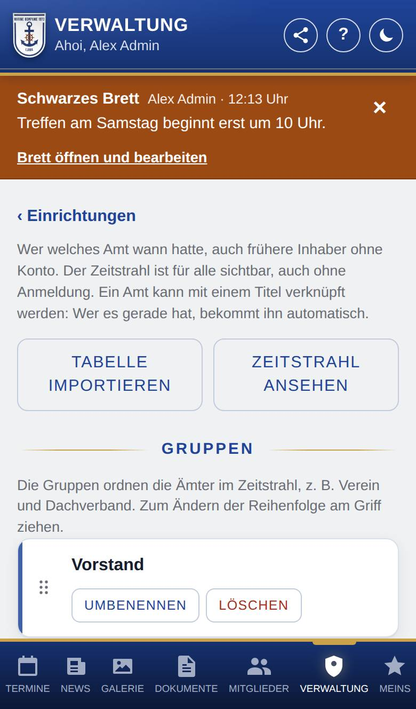
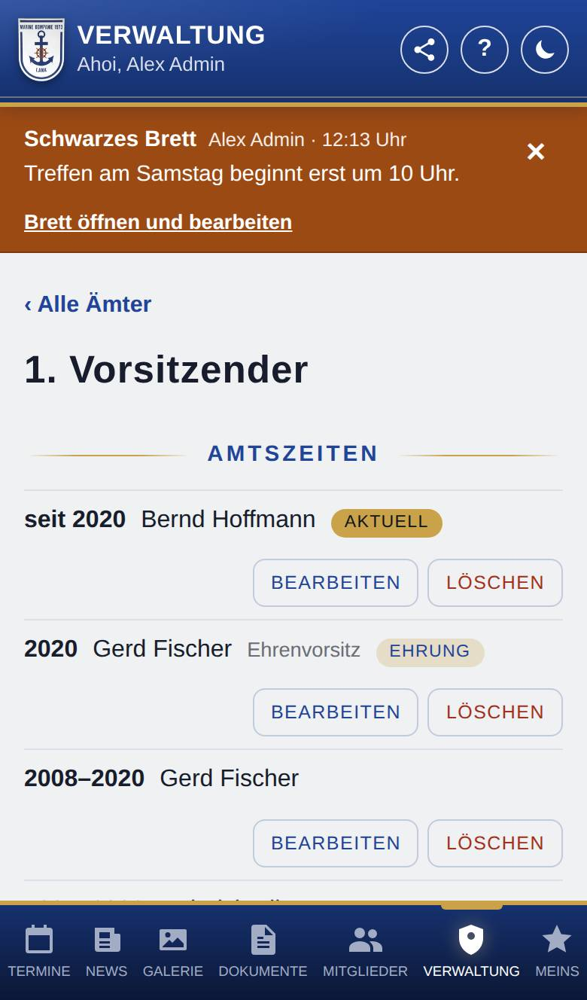
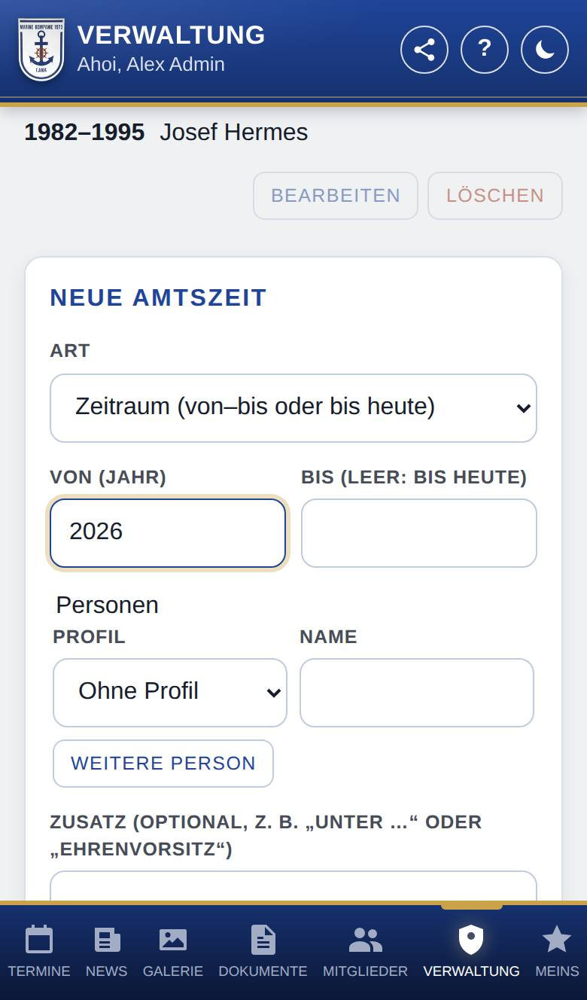

Ämter verwalten
Nur, wenn Ämter eingeschaltet ist.
Hier pflegst du, wer welches Amt wann hatte – auch frühere Inhaber ohne Konto. Was du einträgst, steht im Zeitstrahl unter Mitglieder → Ämter und ist für alle sichtbar, auch ohne Anmeldung.

So öffnest du die Seite
Tippe unten auf Verwaltung, dann auf Einrichtungen und auf Ämter. Mit ‹ Einrichtungen kommst du zurück.
Was du hier siehst
- Tabelle importieren: viele Amtszeiten auf einmal übernehmen.
- Zeitstrahl ansehen: öffnet die Ansicht, die alle sehen.
- Gruppen: je Gruppe Umbenennen und Löschen, darunter Neue Gruppe mit Gruppe anlegen.
- Die Ämter je Gruppe (und unter Ohne Gruppe), mit der Zahl der Amtszeiten und, falls verknüpft, dem Titel, den das Amt vergibt.
- Neues Amt mit Bezeichnung, Gruppe und Anlegen.
- Links an Gruppen und Ämtern ein Griff (sechs Punkte) zum Verschieben.
So gehst du vor
Eine Gruppe oder ein Amt anlegen
- Trage unter Neue Gruppe eine Bezeichnung ein, z. B. „Vorstand“, und tippe auf Gruppe anlegen.
- Trage unten unter Neues Amt die Bezeichnung ein, wähle die Gruppe (oder „Ohne Gruppe“) und tippe auf Anlegen.
Die Reihenfolge ändern
- Halte eine Gruppe oder ein Amt am Griff links fest.
- Zieh es an die gewünschte Stelle. Ämter verschiebst du innerhalb ihrer Gruppe. Am Computer geht es auch mit Tab und den Pfeiltasten.
Eine Amtszeit eintragen
- Tippe auf das Amt. Es öffnet sich mit allen seinen Amtszeiten.
- Tippe auf Amtszeit eintragen.
- Wähle die Art: Zeitraum (von–bis oder bis heute) oder Einzelnes Jahr.
- Trage Von (Jahr) und, wenn die Amtszeit vorbei ist, Bis ein. Leer heißt: läuft noch.
- Wähle unter Personen bei Profil, wer die Person ist: Ohne Profil (kein Konto, z. B. frühere oder verstorbene Mitglieder; dann trägst du den Namen ein), Mitglied oder Ehemaliger (dann wählst du sie aus). Mit Weitere Person trägst du mehrere ein.
- Trage, wenn gewünscht, einen Zusatz ein, z. B. „Unter …“ oder „Ehrenvorsitz“.
- Setze den Haken bei Ehrung, wenn es eine Ehrung ist (z. B. Ehrenmitglied). Das geht bei beiden Arten. Im Zeitstrahl trägt sie dann einen Stern und den Hinweis Ehrung. Ein einzelnes Jahr ohne Haken (z. B. ein Königsjahr) erscheint als gewöhnliches Jahr.
- Tippe auf Speichern.


Eine Amtszeit ändern oder beenden
- Tippe im Amt bei der Amtszeit auf Bearbeiten (oder Löschen).
- Endet ein Amt, trage bei der Amtszeit das Jahr unter Bis ein und tippe auf Speichern.
Ein Amt umbenennen oder löschen
- Öffne das Amt und ändere unter Amt bearbeiten Bezeichnung oder Gruppe; tippe auf Speichern.
- Amt löschen löscht das Amt mit allen Amtszeiten. ‹ Alle Ämter führt zurück.
Eine Tabelle importieren
- Tippe auf Tabelle importieren.
- Füge die Tabelle ins Feld Tabelle ein oder wähle eine CSV-Datei. Eine Zeile je Amtszeit, Spalten durch Semikolon oder Tabulator getrennt:
gruppe;amt;beginn;ende;art;personen;zusatz;ehrung. - Lass Personen mit dem Konto verknüpfen, wenn der Name genau zu einem Konto passt angehakt, wenn die App Namen mit Konten verbinden soll.
- Tippe auf Vorschau, prüfe die Zeilen und tippe auf Übernehmen.
Gut zu wissen
- Die Reihenfolge der Amtszeiten im Zeitstrahl ergibt sich von selbst: laufende zuerst, dann nach Jahren.
- Löschen lässt sich nur eine leere Gruppe.
- Ehemalige stehen bei Ehemaliger zur Auswahl, wenn sie in der Verwaltung als ehemalig eingetragen sind.
- Wird ein Konto gelöscht, bleiben seine Amtszeiten mit dem Namen stehen; nur die Verbindung zum Konto fällt weg.
- Import: ende ist ein Jahr, „heute“ für eine laufende Amtszeit oder leer für ein einzelnes Jahr. art ist meist leer; „zeitraum“ oder „zeitpunkt“ erzwingt die Art. Mehrere personen trennst du mit „&“. ehrung ist „ja“ für eine Ehrung, sonst leer oder „nein“. Eine Kopfzeile ist erlaubt. Gruppen und Ämter findet die App nach ihrem Namen oder legt sie an. Was es genau so schon gibt, überspringt sie; du kannst dieselbe Tabelle also gefahrlos noch einmal einspielen. Zeilen mit Fehler musst du erst korrigieren.
- Import älterer Tabellen mit nur 7 Spalten (ohne ehrung): Daraus entstehen keine Ehrungen, auch nicht bei „zeitpunkt“. Früher wurde aus jedem einzelnen Jahr eine Ehrung. Ergänze bei Ehrungen also die Spalte mit „ja“ oder setze den Haken danach von Hand. Eine Zeile, die sich nur im Wert der Ehrung von einer vorhandenen Amtszeit unterscheidet, gilt als schon vorhanden.
Titel automatisch vergeben
Nutzt die Kompanie Titel, kannst du im Amt unter Titel vergeben einen Titel bei Verknüpfter Titel wählen (dafür musst du auch Titel verwalten dürfen). Bevor du auf Verknüpfen tippst, zeigt die App, wer den Titel bekommt und wer ihn verliert.
- Wer eine laufende Amtszeit hat (mit Konto, als Mitglied), bekommt den Titel automatisch; wer keine laufende mehr hat, verliert ihn. Einzelne Jahre und beendete Amtszeiten vergeben keinen Titel, mit oder ohne Haken Ehrung.
- Von Hand lässt sich ein verknüpfter Titel nicht mehr vergeben oder entfernen. Ein Titel gehört zu höchstens einem Amt.
- Verknüpfung lösen ändert an den vergebenen Titeln nichts; danach vergibst du sie wieder von Hand.
- Auf der Seite einer Person steht bei ihren Amtszeiten der Name des Titels statt der Bezeichnung des Amts. Benenne das Amt also in der Mehrzahl („Kompaniekönige“) und den Titel in der Einzahl („Kompaniekönig“).